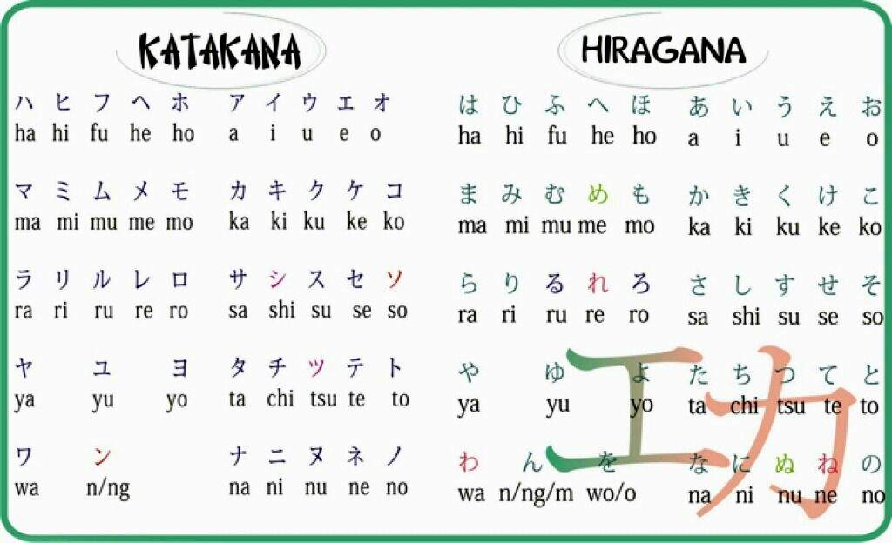

Острова Японии
Перечислим острова Японии и их крупнейшие города:
| Хоккайдо | Хонсю | Сикоку | Кюсю |
| Саппоро | Токио | Мацуяма | Фукуока |
Всем привет! Добро пожаловать на сайт, посвященный Стране восходящего солнца!
Здесь вы сможете узнать много нового про географию, кухню и язык Японии, а также обсудить интересующие вас иные темы касательно этого чудесного государства.
В данном разделе вкратце описана география Японии.
Перечислим острова Японии и их крупнейшие города:
| Хоккайдо | Хонсю | Сикоку | Кюсю |
| Саппоро | Токио | Мацуяма | Фукуока |
Ниже вы можете видеть вулкан Фудзи во время сезона красных кленов:
В данном разделе вкратце описан японский язык.
Ниже приведено изображение, катаканы и хираганы:

Подробнее про слоговую азбуку можно почитать здесь.
Не забудьте оставить Ваш отзыв о нашем проекте.